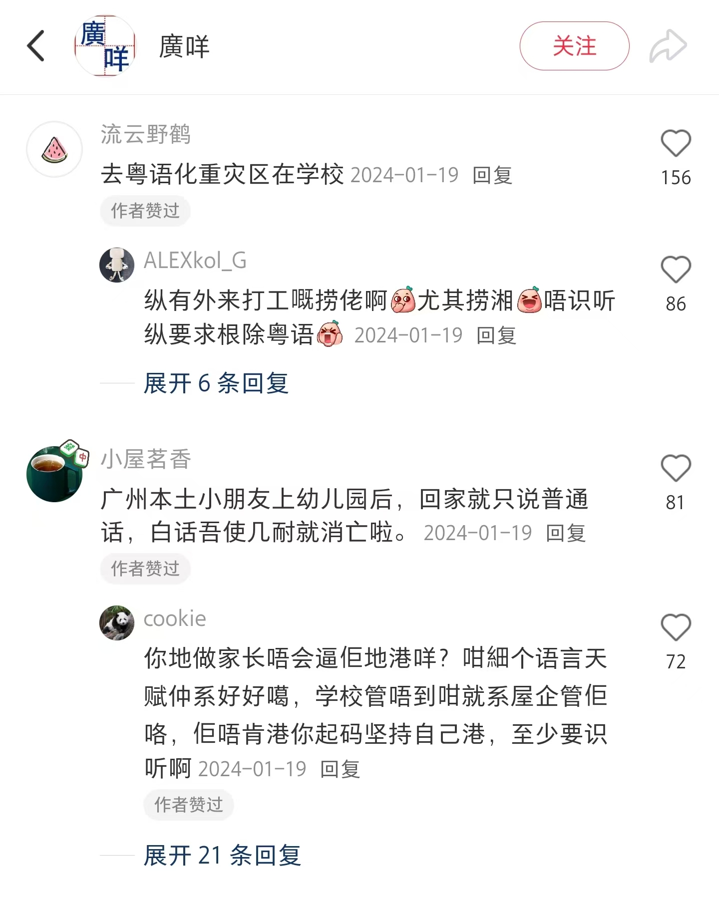
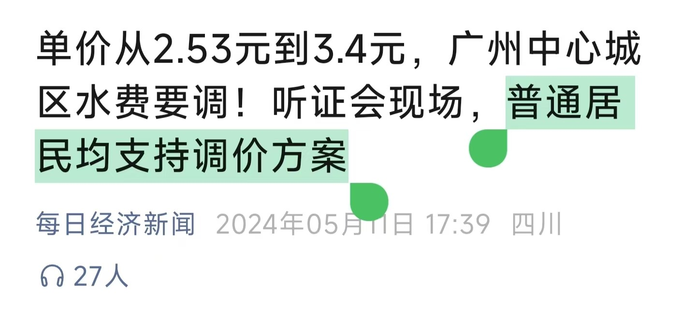
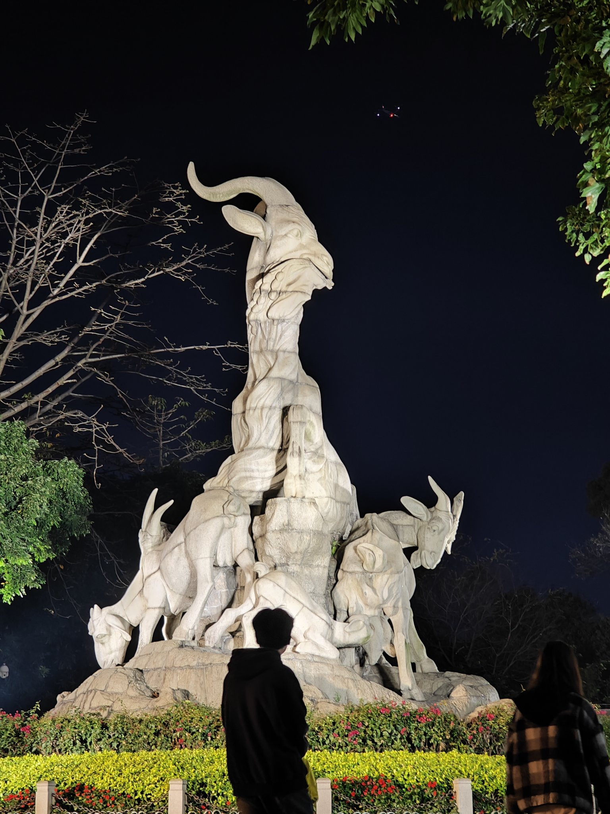
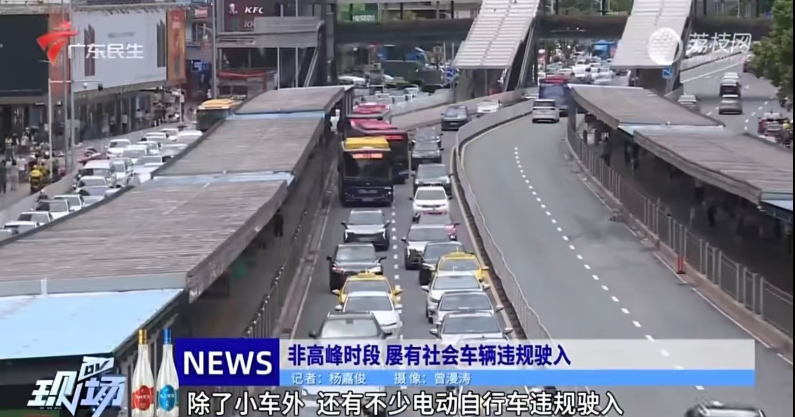

一段时间以来，互联网上关于“保护粤语”、“粤语传承”的争论越来越多。作为在广州生活超过20年、以国粤双语作为母语的95后年青人，我想聊聊自己的观察和思考。
本文的中心论点在标题中已明确指出：粤语的消逝，本质是粤港文化产业的没落，和粤语精神内核的灭亡。接下来我将分3个部分来论证这一点。
声明：
- 本文中的表述如“很多”“很少”基于笔者的日常观察，而非具体统计数据；
- 内容仅为个人观点，可能与读者的认识有所不同，欢迎交流讨论；
- 使用“粤港”而非“粤港澳”，是因为澳门特区在文化产业领域相对贡献较少，因此未作详细讨论；
- 部分粤语用词已使用括号标明释义，供非粤语读者参考。
前言
任何一种语言的发展都需要尊重客观规律，任何一种语言的传承都需要载体。
在社交媒体上，不少网友都认为，粤语消逝的原因是“学校推普”、“家长不教”，导致粤语传承从下一代开始断裂。

但笔者认为，这不是根本原因。根本原因是，粤语的载体已经在慢慢消逝。而粤语的载体，不外乎是粤港文化产业的成果。
接下来，我将尝试从影视剧、新闻、日常在外消费这三个场景来聊聊，粤港文化产业是如何影响粤语的发展的。
从百花齐放到“无屁可放”
曾几何时，打开机顶盒，调至TVB翡翠台或者南方卫视，无数好看的港剧接踵而至。
从周润发的黑帮电视剧《上海滩》（1980）到韦家辉的商战剧《大时代》（1992），从ICAC反腐剧《廉政行动》到金庸的《射雕英雄传》（1983），题材之广、质量之精，令观众咂舌。总有一部电视剧适合你的口味，总有一句台词让你回味无穷。
而至于经典电影，那更是信手拈来：周星驰《大话西游》(1995)、周润发《赌神》(1989)、刘德华和梁朝伟《无间道》(2002)、张国荣和巩俐《霸王别姬》(1993)、粤港合作片《少林足球》(2001)……
有些台词，比如“做人呢，最紧要係开心”、“长命功夫长命做（做不完的事，还有很多时间可以做，不着急一次做完）”、“如果勤力有用，乡下D牛只只发晒达啦（如果勤奋有用，乡下的牛早就发达了）”等，更是蕴含了人生哲理。
在《大时代》《射雕英雄传》等经典剧作分别在台湾金钟奖、飞天奖等多个电视节获得重要奖项的同时，我和我身边的同学也无不在传唱“浪奔、浪流”，无不在复诵“Sorry啊，有钱真係大晒啊（有钱真是可以为所欲为）”、“ICAC查案，唔方便透露”、“宜家唔系事必要你讲，但係你所讲慨一切，将有可能成为呈堂证供（告知嫌疑人有权保持沉默）”。
试问，这是学校逼我们学的吗？这难道不是由于粤语作品百花齐放，具有足够的吸引力，我们自愿争先恐后去模仿、去“为爱发电”，而自觉学习和传播粤语的吗？
香港优质作品喷涌，广府地区的文化产业也不甘落后。“生仔（男孩）未必就是福”一响，一家人就要开始排排坐看《外来媳妇本地郎》了。这部从2000年开播共4330集的情景喜剧，在黄金档时间为无数广府家庭送去欢乐的同时，也潜移默化地传播了反对重男轻女、地区包容融合、家和万事兴等前卫的价值观念。
是的！在以前，粤语不仅仅是语言，粤语更是人情味的生动诠释者，也是前卫观念的坚定传播者。粤语用大家都能听懂的“白话”说出了真挚的情感与真实的社会故事。
可惜，以前是以前，现在是现在。现在粤语的文化作品又是怎样的呢？
我看了2020年TVB《法证先锋4》的前几集，我认为TVB应该向我赔付看这部剧的费用。
接地气的港味和人情味没有了，取而代之的是穿白大褂手拿iPad靠巧合办案的警察。街边采集、走访怀疑对象没有了，取而代之的是下班、吃饭、锻炼。
那还不如改名叫《iPad先锋》算了！这样起码还能和苹果公司谈合作。
电影方面，我也看了2025年甄子丹《误判》，我的评分是60分。甄子丹的打戏给100分，文戏倒扣40分。剧情尴尬，台词突兀，情节老套——看完开头30分钟，我都已经能准确预测整部剧的剧情走向了。
这部电影不能说差，但绝对算不上经典，和《黑社会》（2005）等电影相比，只能说望尘莫及。
事实上，这两部作品绝非个例。近年来，香港的文化产业一直在走下坡路，值得观看的港剧港影越来越少，到现在连屁都很难再放出一个。
就连综艺也如此。1995年开始，曾志伟的恶搞趣味综艺《奖门人》系列为TVB独当一面，而到了2022年，TVB炒港乐的冷饭还不得不靠湖南广电主办的《声生不息·港乐季》。
湖南广电主办的，质量肯定不差，但我想问问各位粤语使用者，你真的觉得“声生不息”这个词用粤语读起来顺口吗？
不顺吧！这是因为，《声生不息》根本不是为粤语歌专门打造的，只有“港乐季”专题才会有大量粤语歌上台。
无可否认的是，任何时代的年青人，大多数会追随新事物。那试问，05后或者更年轻的一代人学习粤语，是要去硬着头皮看烂片，还是去看偶尔有粤语出现的内地综艺？
影视作品的落寞让粤语的曝光率逐渐降低，缺乏触动心灵的载体，也就难以吸引年青一代主动去学习使用这门语言。这不仅是创作能力的式微，更是文化传播力的断层。
从针砭时弊到“一派祥和”
1999年1月1日，广东纸媒《南方周末》新年贺词《总有一种力量让我们泪流满面》感动了无数读者。
“阳光打在你的脸上，温暖留在我们心里”；
“没有什么可以把人轻易打动，除了真实” ；
“当你面对足以影响人们一生的社会不公，你就明白正义需要多少代价，正义需要多少勇气”；
“在这个时刻，我们无言以对，惟有祝福：让无力者有力，让悲观者前行”。
从那时起，广州粤语媒体就因浓厚的人文主义色彩而备受街坊喜爱。广州粤语媒体从人民群众中来，到人民群众中去，尊重真实、批判不公，“够姜够敢讲”，真正服务广州街坊。这也是粤语精神的内核所在。
《新闻日日睇》陈扬，亲自采访因地铁1号线施工而搬到同德围的十几万荔湾居民的生存状况，在2005年5月份一连推出了6集《走进同德围》系列报道。
他说，“广州没有理由委屈这些百姓，一定要炸掉这座城市的冷漠。”
2007年，珠江台《630新闻》开始请来了广州市政协委员韩志鹏等“敢怒敢言”的政协委员在节目上针砭时弊。
白云山禁车，公开公务车的身份、避免公车私用，立法改变公厕重男轻女现象等提案的背后，都少不了韩志鹏的身影。
还有《今日最新闻》。2011年10月19、20日的节目爆料，节目记者路遥遥在东山新河浦采访违法停车场，遭车场工作人员阻止后，被街道“临时工”疯狂追打，先用凳扔，再用铁架砸，并在记者离开时，突然追上且捏住记者颈部，最后记者被打至血流满面，额头缝了4针。
东山街街道办事处当晚发出媒体通稿，声称他们经常巡查，但不知停车场的存在，停车场与街道无关，此是车场人员和记者的双方纠纷。有人质疑，实际上东山街道办和东山派出所有人参与了利益分成。
主持人彭彭认为，通稿完全是避重就轻，企图掩盖事实，在直播中愤而把通稿当场扔掉。另一主持人梁栋也在《南方都市报》发表文章称，当局的通稿材料空洞，而且假话连篇。
粤语里面有个词叫“大国公民”，其内核是公民意识，强调权利意识与社会责任感。我们学粤语，学的不仅仅是字词发音，更是其精神内涵。
这种内涵当然不仅仅表现在新闻，其在电视剧也充分体现。
比如情景剧《七十二家房客》就尖锐地指出，自来水涨价听证会，看似“顺应民意”，实则道貌岸然。

那么，我们把视角转到当今。现在的粤语媒体，还有当年的骨气吗？
2010年之后，经历了亚运的广州，整体上祥和平静，已经没有那么多“名嘴”了。
2013年，李静雯离开了《今日关注》；2017年，彭彭的搭档梁栋离开《今日最新闻》；2020年，彭彭离开《今日最新闻》。仍在坚持的郑达和马志海，很多时候也已经没有办法真正反映民意。
2024年，明确反对自来水涨价、永不妥协的“侠士”韩志鹏先生因肺癌病逝，广州永远地失去了一个不可取代的声音。同年，广州水费立即上涨31%，还称“听证会上17名代表均支持上涨”，彻底将道貌岸然变成了“正大光明”。

我们在这里不去讨论自来水涨价是否合理，但当一个调整、一个关系到千家万户的政策只有清一色的赞扬的时候，粤语精神就已经死了，这也应证了1991年罗大佑的预测，“大国公民”的内核最终沦为“只需身有钱”。
即便现在的孩子们懂得粤语的字词发音，那又有什么意义呢？粤语的灵魂早就烟消云散了！
从双语共融到“对立歧视”
曾经，国粤双语作为官方语言，共存于粤港地区（港府一直推广两文三语），粤语使用者遇到外地游客，也会竭尽毕生所学，改用普通话服务好外地朋友。
热情、包容，同样是粤语精神的体现，也是对服务业从业者的内在要求。
可如今，香港的服务员，动辄歧视操普通话的游客，翻白眼轻蔑伺候。
而且，这种恶劣风气不仅存在于香港服务业，也蔓延到了全港各个岗位的各个角落，高校也不能幸免。更有甚者，借国粤对立炒作政治问题，简直令人发指。
此外，互联网如今还有一部分“粤语警察”，以自己认为的“标准音”来评判他人口音，对粤语初学者严加苛责甚至人身攻击。
殊不知，而语言本是地域多样性的体现，“正音”并不该成为语言发展的唯一标准。
这种内部分裂使粤语从一种包容的文化符号，变成了某种排外的身份认同工具，难以吸引新的使用者，也限制了其传承范围。
结语：粤语与广州，一去不返的辉煌？
至少在我生活的片区，粤语一般称为“广州话”。粤语的兴衰浮沉，和广州的发展变迁有着千丝万缕的关系。

多年前，如果要我自我介绍，我会很自豪地说，“我来自广州，识讲广州话（会说粤语）”。
因为在我心目中，粤语的符号含义远大于交流功能。
粤语是大榕树下，街坊邻里的一句“早晨（早上好）”和“你食咗未啊（今天吃饭了吗）”；
粤语是公交车上的的“爷爷你坐啦”“唔该晒，多谢你后生仔（谢谢你小伙子）”；
粤语是四通八达的广州地铁上的报站，是向地铁站工作人员免费借伞时的一句“麻烦晒”；
粤语是行花街时大家说的“恭喜发财，利是斗来”；

粤语是2010广州亚运会的“一起来，更精彩”；是广交会的朴素但真诚的“欢迎来到广州”；
粤语是云山苍苍，珠水泱泱；粤语是海纳百川，有容乃大；粤语是敢为人先、务实进取；粤语是“以食为天”，笑对生活。
可是不知道从什么时候开始，我好像不再以广州为傲了。
有人告诉我，越秀五羊已经过时了，广州塔才是新地标。
有人告诉我，广州地铁已经落后了，早年规划不当导致高峰期拥挤不堪，“死亡3号线”臭名远扬；老站点没有厕所，新站点换乘距离太长（如番禺广场站3换18需步行10分钟）。
有人告诉我，广州已不再是“国际化大都市”，而是“中国小孟买”——
大量电动单车在市区随意穿梭，路面交通“好似七国咁乱（混乱不堪）”；
BRT车道早就引起广泛热议，规划部门事不关己高高挂起；

市内高速的应急车道可以随意占用，毕竟广州交警的执法“能力”名声在外。
还有人告诉我，粤语和人情味一样，已经慢慢变少了，而谩骂戾气开始盛行；
本地人（这里的定义由你决定）的包容最终演变为“包熔”，最终会亲手毁掉这座城市。
粤语的存续，不仅仅是语言本身的传承，更与粤港文化产业的兴衰密不可分。曾经引以为豪的影视作品、媒体锐度和和谐氛围，共同构成了粤语文化辉煌的一部分。然而，当这些要素逐渐消失，语言的价值和意义自然难以维系。
所以我一直在思考一个问题，至今没有答案：
粤语，连同曾经的广州，也和我的童年一样，一去不复返了吗？


发表您的看法